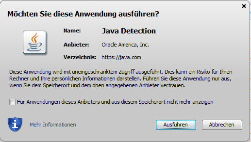
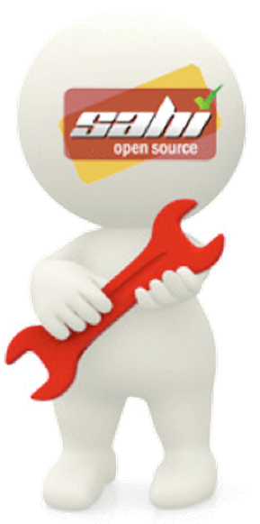
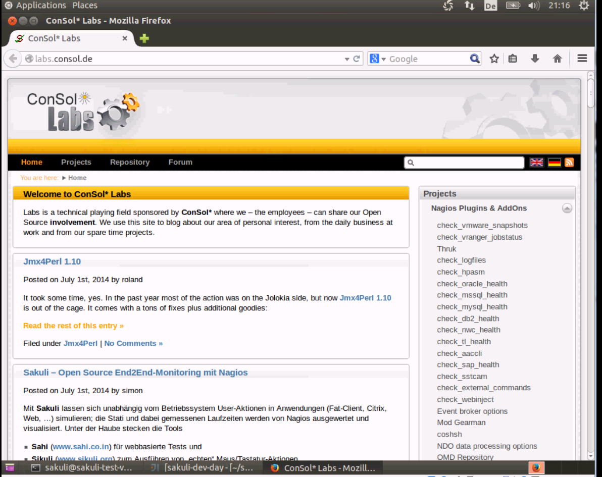
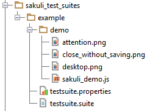
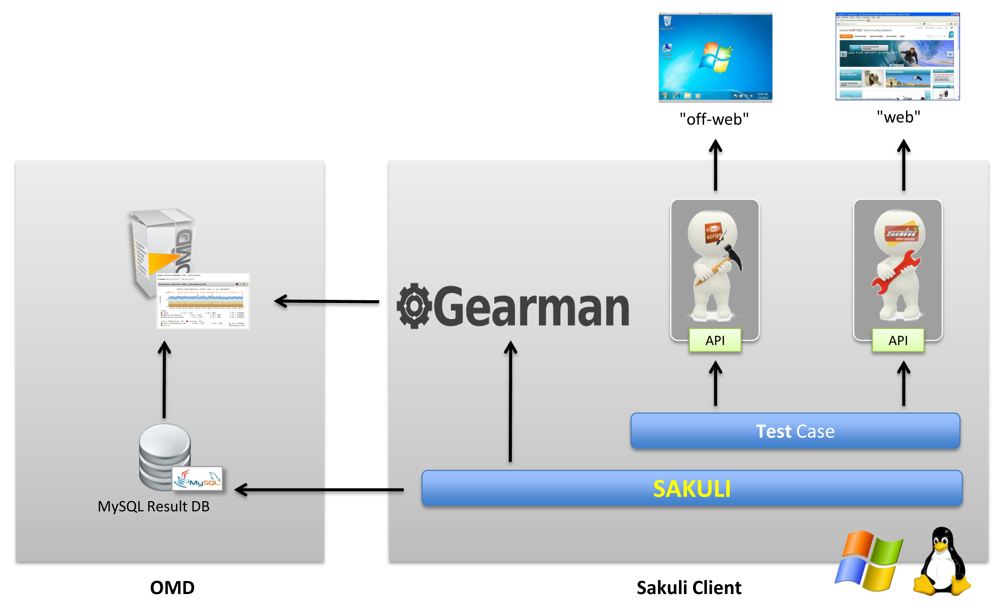
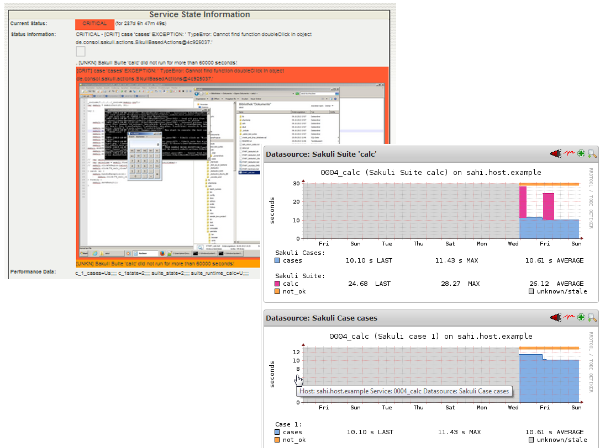
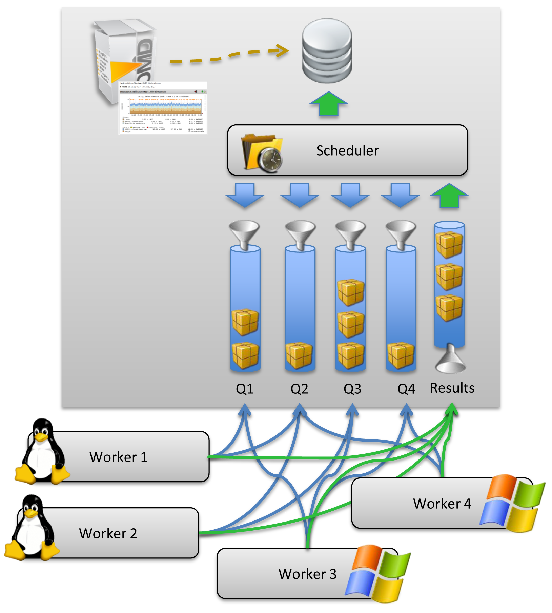

End-to-end testing
for web sites and common UIs with full Nagios integration
Motivation

- Business-kritische Applikationen bestehen oft aus einer Vielzahl an Komponenten
- Applikations-Qualität aus Anwendersicht ist nur am Ende der Funktionskette messbar
- UI-Interfaces sind schwer kontinuierlich zu testen
Herausforderung
- Web-UI-Test-Tools haben nur Zugriff auf DOM-Elemente
- Wie kann man Plugins testen bzw. damit umgehen?
=> Flash, PKI-Abfragen, Java Applets - Grafisch basierte Tests sind Ressourcenintensiv
- OS unabhängiges Framework
- Rendering testbar?
Was macht Sakuli?
|
|
||

|
+ |

|
|
|
Stärken der Vereinigung
|  |
|
Kategorie |
|
| Beschränkung auf den Browser | |||
| Web Tests (DOM basiert) | |||
| Open Source & Java API | |||
| Automatisierbarkeit, Ergebnisauswertung über DB / Nagios | |||
| Unterstützung bei Testerstellung (Recorder, Screenshot-Finder) |
DEMO
File Structure
TestCase Aufau
// tc.js
/*************************************
* Initialization of the JAVA backend
* and set warning and critical time
*************************************/
_dynamicInclude($includeFolder);
var testCase = new TestCase(60, 70);
var env = new Environment();
var appNotepad = new Application("gedit");
var region = new Region();
/******************************
* Description of the test case
******************************/
try {
//...
/************************************************
* Exception handling and shutdown of test case
**********************************************/
} catch (e) {
testCase.handleException(e);
} finally {
testCase.saveResult();
}
Definition eines Ablaufs
// tc.js
/************************
* Some Variables
***********************/
var $cl_home = "http://labs.consol.de/lang/en";
var $cl_projekte = "Projects";
var $cl_c_mysql_h = "check_mysql_health";
var $cl_c_oracle_h = "check_oracle_heal
/************************
* Step for Notepad
***********************/
appNotepad.open();
env.type("Welcome to Sakuli!\n")
.type("I will help you to test your projects, like webapplications...\n")
.sleep(2);
testCase.endOfStep("notepad", 20);
/************************
* Step for labs.consol
***********************/
switchWindow();
_navigateTo($cl_home);
_highlight(_link($cl_projekte));
_click(_link($cl_projekte));
env.sleep(5)
.takeScreenshot("C:\\sakuli\\testscreenshot.png");
_highlight(_link($cl_c_mysql_h));
_click(_link($cl_c_mysql_h));
_highlight(_link($cl_c_oracle_h));
_click(_link($cl_c_oracle_h));
_setValue(_textbox("s"), "nagios");
_click(_link("Home[1]"));
testCase.endOfStep("project", 20);
/*****************
* print test client
*****************/
backToNotepad();
env.type("I can also test client applications, like gedit...\n")
.sleep(2);
testCase.endOfStep("print_test_client", 10);
Fluent API
/*** calculator app ***/
var calculatorApp = new Application("galculator")
.setSleepTime(1);
.open();
testCase.endOfStep("Open Calculator", 3);
/**********
* calculate 525 + 100
*********/
var calculatorRegion = calculatorApp.getRegion();
calculatorRegion.type("525");
env.sleep(2);
calculatorRegion.find("plus.png")
.click()
.type("100")
.find("calculate")
.click();
testCase.endOfStep("calculate 525 +100", 20);
Custom Functions
// tc.js
/**********
* TAB+ALT
*********/
function switchWindow() {
env.type(Key.TAB, Key.ALT);
}
/***************
* Go back to notepad
**************/
function backToNotepad() {
switchWindow();
env.type("Finish!\n\n");
}
Architektur
Nagios Integration
Ausblick - Queue Architektur
- Skalierung durch Client-Worker-Prinzip
- Einfachere Wartung
- Zentraler Scheduler

Ausblick & Ideen
- Java-API / TestRunner für Integrationstests
- Asynchrone wait Funktionen / Callbacks
- Headless Execution - Linux: xvfb, Windows: ?
- Aufzeichnung der Testabläufe als Film zur Fehlerdokumentation